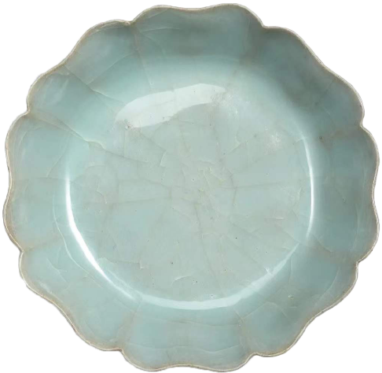

官窑青釉葵辫洗
南宋 北京故官博物院


这件南宋官窑青釉葵瓣洗，高4.8cm，口径18.7cm，足径11.2cm。
八瓣葵花式，浅腹，敞口，侧看弯弧雍雅。棱角合蓄，器身随沿起伏，柔关端延。涩足无釉，底有支钉痕七颗。施釉天青微蓝，色泽温润澄澈，开片冰裂自然相缀，宛若宝玉，简约雅绝，浑然天成。
此洗造型优美，釉层堂润如玉，在溢青流翠的釉面上片纹纵横交错，大片敛间又闪现条条小冰裂纹。构成优雅和谐的艺术整体。